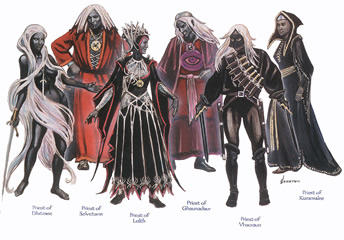

|  |
{kind=link}
伊丽丝特瑞(Eilistraee)
称呼:幽暗少女(The Dark Maiden)、舞蹈女士(Lady of the Dance)、银发女士(Lady Silverhair)
其它名字:无
神职:歌曲、美丽、舞蹈、剑技、狩猎、月光
神力:较弱神力
所处位面:约瑟园(Ysgard)
领域:Nidavellir/Svartalfheim
领导者:无
盟友:卡勒尤尔德安·滑手、哈勒拉·亮斧、鲁汝、密斯塔、席德瑞恩诸神、苏伦
宿敌:深渊·德沃尔拉、克拉温纱丽、拉德格沃、关纳德、罗尔丝、梅勒尔、席文塔姆、维瑞雯、布力勃德罗泼勒、血后、迪卡拉泽、迪瑞卡、眼魔巨母、格泽门德、 艾森席恩、艾尔森德芸、劳格兹得、曼泽柯瑞安(已死)
标记:一把刺入银月的白银长剑，周围环绕着银色细丝(伊丽丝特瑞的头发)
阵营:无序善良
信徒阵营:守序善良、中立善良、无序善良
伊丽丝特瑞是那些渴望重新生活在诸国度地表，体验久已被同胞们遗忘的森林气息的善良卓尔精灵的女神。她是一位掌管歌与美、美德与光明的女神，信徒们通过歌舞—特别是在地表世界的星光之下—来敬拜她。伊丽丝特瑞会赐予她忠实信徒在狩猎和剑技上的能力，信徒拜祭她时通常也举行一场盛宴。除了卓尔精灵外，伊丽丝特瑞也有很多人类、精灵和某些特别的半精灵（主要位于银月城周围）信徒，她也一直和善地关注着竖琴者。她现身时，人们通常只能看见她遥远的轮廓，而她超凡绝俗催人泪下的优美歌声也总是随她左右。
幽暗少女是维瑞雯的妹妹，艾尤释涅（日后被放逐，成为罗尔丝)和柯瑞隆·拉瑞斯安的女儿。她在一场席德瑞恩诸神与阴谋夺取阿梵多的邪恶诸神的大战中，差点一箭死自己的父亲，从那以后幽暗少女就发誓决不再使用远距离武器（但她并不要求信徒们也这么做）。虽然那一箭是因为艾尤释涅的诡计而射出的误射，但伊丽丝特瑞坚持自己应该和母亲兄弟一道被阿梵多（以及席德瑞恩神系）放逐，这是因为她预见到有朝一日需要自己来抵挡母兄的邪恶。在艾伯尔-托瑞尔，幽暗少女奋力抵抗维瑞雯的仇恨以及他对伊力斯瑞（居住在南方肤色黝黑的精灵）的腐化影响。很多她的信徒在黑暗浩劫中丧生，伊丽丝特瑞的影响力因此大幅衰退，而罗尔丝和关纳德的信仰在黑暗精灵中不断抬头，蚕食着伊丽丝特瑞剩余的影响。仅仅在最近几个世纪，伊丽丝特瑞的信仰在费茹中才有逐渐复兴的迹象，幽暗少女也试图领导坠落的卓尔精灵回到被他们抛弃已久的阳光下。
伊丽丝特瑞的形象是一位忧郁、哀伤的卓尔精灵少女，一位美丽及和平的热爱者。大多数邪恶卓尔精灵的胸膛中都燃烧着对这位善良女神的怒火，当有机会伤害她的信徒时，这股怒火就会爆发为狂野的行动。虽然并非公开的行为，但伊丽丝特瑞常常给予那些她喜欢的生物（不论它们是不是她的信徒）一些不大但迅速、实际的帮助。伊丽丝特瑞最喜欢观察吟游诗人歌唱、创作，工作中的工匠，热恋中的恋人和那些仁慈的行为。
虽然伊丽丝特瑞和席德瑞恩诸神依然是盟友，但他们之间的关系并不十分自然，这反映了精灵中固执的界限划分。所有精灵神明中，伊丽丝特瑞只和艾伊凡·伊瑟尔亲近，而且她直到最近才勉强与舍维瑞什停战。伊丽丝特瑞和人类的魔法女神密斯塔极为亲近。“七姐妹”中老七厄丝妮·葵隆就同时是密斯塔和伊丽丝特瑞的选民。伊丽丝特瑞厌恶罗尔丝和关纳德的邪恶，不管是罗尔丝腐化堕落的邪恶，还是关纳德肆意放纵的邪恶，她都深恶痛绝。兄长维瑞雯对酷行的妥协和自私自利，使伊丽丝特瑞十分哀痛。
关纳德(Ghaunadaur)
称呼:那潜伏者(That Which Lurks)、上古之眼(the Elder Eye)、远古之神(the Ancient One)
其它名字:关纳达(Ghaunadar)、葛摩斯·饮魂者(Gormauth Souldrinker)、朱比烈斯(Juiblex)、古元素神(the Elder Elemental God)
神职:软泥怪、粘怪、胶泥怪、驱逐者、石笋怪、反叛、所有地表下的事物
神力:较弱神力
所处位面:软泥侧元素位面(Paraelemental Plane of Ooze)
领域:The Cauldron of Slime
领导者:无
盟友:无
宿敌:布维姆(已死)、曼德尔(已死)、深渊·德沃尔拉、伊丽丝特瑞、格拉斯、拉德格沃、罗尔丝、席德瑞恩诸神、席文塔姆、维瑞雯、梅勒尔、布力勃德罗泼勒、血后、迪卡拉泽、迪瑞卡、眼魔巨母、艾森席恩、艾尔森德芸、劳格兹得、曼泽柯瑞安(已死)、泼斯洛菲尔
标记:一个紫色圆圈，由一个深紫色内环和黑色外环勾勒而成。中心有一个带黑边的深浅紫色交错填充的眼睛。比较古老的标记则是一个琥珀色的倒立三角形位于一个紫色背景中，上面还有一个由琥珀色线条构成的七扭八歪的“Y”字，它的三条线分别从三角形三条边的中心穿过。
阵营:无序邪恶
信徒阵营:守序中立、中立、无序中立、守序邪恶、中立邪恶、无序邪恶
关纳德是一位衰落的神祗，它自从时之黎明起就把诸国度中最黑暗的领域作为自己的地盘。那潜伏者以有很多触手的暗紫色无固定形状胶滴的面貌出现。它被那些最巨大的粘怪、软泥怪、巨蛞和其它爬行生物（它们都是些形状怪异的生物，不过其中一部分被认为拥有一定的智力）敬拜。以前所有这样的生物曾经都敬拜关纳德，但关纳德因为它们在某时违背了它的意志—据说和它被刚由席德瑞恩神系驱逐的罗尔丝击败有关—于是一怒之下把它们弄的疯疯癫癫并剥夺了它们的智力。这样做的结果之一是很多它的信徒和它大部分的力量都不复存在。关纳德和它巨大的石笋怪仆人长久以来被幽暗地域中的很多种生物敬拜，特别是那些孤单或只拥有十分有限智能的怪物、其他被驱逐者（它偶尔会帮帮他们，以回报他们的崇拜献媚）、以及少数还留有智力的无定形软体生物。那些背离他们现有神明，寻找新的信仰的邪恶生物—包括不满罗尔丝统治的卓尔精灵—也开始转而敬拜那潜伏者。多数人类认为敬拜关纳德是种令人作呕的举动，但整个托瑞尔都遍布着上古之眼的秘密地下祭坛和宗教组织，这在剑岸南部、特伊和卡拉图中那些古老而衰败的土地上尤为密集。
虽然关纳德与坦纳瑞领主“无面之王”朱比烈斯或那个没有名字的古元素神完全无关，但关纳德在托瑞尔晶壳环界中假代了这两位从不在诸国度活动的神。葛摩斯·饮魂者也许曾经是一位独立的神的名字，但即使如此，它也在很久以前就被关纳德完全包融。某些传言中称关纳德常常潜伏在土元素位面和烟侧元素位面，而其他传言则称关纳德位于无底深渊。
依照人类的标准看，关纳德是位行为无常的神祗。它可能帮助那些不过是在宗教仪式上动了动嘴皮子的信徒，甚至花费巨大的力量赐予他们永久性的魔法效果— 但它也可能吞灭或伤害他们。关纳德喜欢观看大型怪物的狩猎和吞食活动及其给猎物所造成的痛苦。在深层位面之外，关纳德沉默而面目狰狞，但古老的记录中提到过关纳德布满烂泥和胶池的大堂中传出的含糊、野兽般的语声。关纳德只通过心灵感应发送直接、简单的词句来进行交流（比如“同意”、“不”、“不是”、 “杀”、“过来”、“去...[心灵传送目标地点的图像]”之类）。
克拉温纱丽(Kiaransalee)
称呼:死者女士(Lady of the Dead)、复仇者(the Revenancer)、复仇怨灵(the Vengeful Banshee)
其它名字:无
神职:不死生物、复仇
神力:半神力
所处位面:无底深渊(Abyss)
领域:113th Level/Thanatos
领导者:罗尔丝
盟友:郝尔、米尔寇(已死)、维尔纱茹、罗尔丝、梅勒尔、席文塔姆、维瑞雯、布力勃德罗泼勒、血后、迪卡拉泽、迪瑞卡、眼魔巨母、格泽门德、艾森席恩、艾尔森德芸、劳格兹得、曼泽柯瑞安(已死)、泼斯洛菲尔
宿敌:深渊·德沃尔拉、杜摩森、伊丽丝特瑞、卡勒文尔、拉德格沃、赭格、罗尔丝、奥克斯(已死)/坦恩布汝斯(不死)、席德瑞恩诸神
标记:带着银戒指的女性卓尔精灵手掌
阵营:无序邪恶
信徒阵营:守序邪恶、中立邪恶、无序邪恶
克拉温纱丽是一位掌管复仇和不死生物的卓尔精灵神祗。她得到了那些寻找因果报应、黑暗魔法或想要延长生命的卓尔精灵的崇拜。虽然长久以来死者女士一直未对费茹表露出多大兴趣，但最近由大巫女郑伊领导在瓦沙兴起的羊头教激发了她对诸国度的兴趣，并且加速了崇拜复仇怨灵的教团在幽暗地域中北部地区的出现。克拉温纱丽作为一位邪恶女神早在艾尤释涅被席德瑞恩神系驱逐之前就已崛起，但死者女士很久以来都不情愿地臣服于蜘蛛之后，只能搞点小打小闹作为反抗（比如帮助精灵女英雄柯斯瑞拉从罗尔丝的魔窟里救出她的爱人。）克拉温纱丽本是一名凡人，一位强大的黑暗精灵死源法师，一个被称作斯仁诺迪的世界的王后。因为使用死人做渎圣的试验，她被自己的丈夫—斯仁诺迪的国王放逐。她带着一小群追随者逃亡，然后立刻把这些追随者转化成不死随从以确保他们的忠诚。此后的几个世纪中，死者女士都在秘密进行她那的邪恶实验，直到她制造了一支不死大军来完成她的复仇。复仇者的军队觉醒之后，斯仁诺迪变成了一个没有生命的死亡世界。这一切毁灭的设计者接下来带着她那群无法思考的仆从遁入了无底深渊以逃避席德瑞恩诸神的怒火。在无底深渊，她最后终于得到了一些神力，成为了一位女神。
仅仅在最近一段时间，克拉温纱丽才部分摆脱了蜘蛛神后的控制，得到了某种程度上的独立。这得益于她成功击败了一位长时间居住在无底深渊的敌对神祗。数年之前，克拉温纱丽为了报复一些被人遗忘久已遗忘的小小摩擦，而向无底深渊的前任不死之王奥克斯发动攻击，夺取了他的领地—斯庵纳图斯—一个笼罩在昏黑、月光照耀的天空(被称为死亡之腹)下的冰雪覆盖、空气稀薄的寒冷位面。在杀了不死王子后，克拉温纱丽并没有足够的力量把多元宇宙中对奥克斯的记忆全部抹去。但克拉温纱丽运用魔力把那位从前的深渊领主的名字从一切形式的记录上消除。当杀死了她的对手并把尸体抛入了星界位面后，死者女士杀光了奥克斯的仆从和代理人（从中留下了一位愿意为她服务的），并且把具有传奇力量的奥克斯之棒藏到了永远没人能够发现的地方—至少她是这么认为的。但近来的某些事件隐约表明奥克斯已经回归，现在是一位自称为坦恩布汝斯的不死神祗。即使克拉温纱丽也不清楚不死王子是已成功的把自己转化为一位不死神祗，是已经被彻底摧毁，还是正等待时机恢复生命（或转为不死状态）。不管真相如何，克拉温纱丽都坚信她原先的敌人最后一定会回归，因此死亡女士加倍努力地寻找并消灭奥克斯和坦恩布汝斯的每一丝踪迹。
长久以来克拉温纱丽对罗尔丝的控制十分不满，只有罗尔丝压倒性的强大力量在一直限制着她进行那些策划已久的复仇行动。不过近来因为坦恩布汝斯命运的真相一直没有搞清，克拉温纱丽对与其它神祗打交道毫无兴趣。但她在费茹上的活动仍然使她受到杜摩森、卡勒文尔和赭格的敌视，并有可能使她和郝尔及维尔纱茹站在一条战线上。
死者女士行事残忍、心智扭曲，胸中时刻燃烧着复仇的火焰。虽然她很久以前就落入疯狂，但她依然保留着她扭曲的狡诈和对每一点小小摩擦和所受羞辱的清晰回忆—无论这些是真实的，还是她自己的想象。复仇者行事无序，极易发怒，而且计划着向所有曾经和她做对的存在复仇。克拉温纱丽喜欢那些没有思想的不死同伴，因为比起有自己思想感觉的生物，没头脑的不死者可以任由她自由操纵—她喜欢亲自解决问题而非倚仗他人。
罗尔丝(Lolth)
称呼:蜘蛛神后(The Spider Queen)、蜘蛛之后(Queen of Spiders)、蜘蛛魔后(Demon Queen of Spiders)、深渊魔后(Demon Queen of the Abyss)、魔网之后(Queen of the Demonweb Pits)、混乱织者(Weaver of Chaos)、猎者(the Hunted)、欲望之母(the Mother of Lusts)、卓尔精灵黑暗之母(Dark Mother of All Drow)、蜘蛛女士(Lady of Spiders)
其它名字:艾尤释涅(Araushnee)、罗丝(Lloth，魔索布莱城和幽勒提尔城叫法)、麦戈宛德尔(Megwandir)、曼德尔(Moander)、兹泽瑞娜(Zinzerena)
神职:蜘蛛、邪恶、黑暗、混乱、暗杀、卓尔精灵种族
神力:中等神力
所处位面:无底深渊(Abyss)
领域:66th level/Lolth's Web (the Demonweb Pits)
领导者:无
盟友:劳维阿塔、梅勒尔、席文塔姆
宿敌:深渊·德沃尔拉、伊丽丝特瑞、关纳德、格乌什·艾伯渊度、克拉温纱丽、拉德格沃、曼德尔(已死)、席德瑞恩诸神、维瑞雯、布力勃德罗泼勒、血后、迪卡拉泽、迪瑞卡、眼魔巨母、格泽门德、艾森席恩、艾尔森德芸、劳格兹得、曼泽柯瑞安(已死)、泼斯洛菲尔
标记:黑色蜘蛛和女性卓尔精灵头部(位于标记底端)或者是黑披风和短剑(兹泽瑞娜形式)
阵营:无序邪恶
信徒阵营:守序中立、中立、无序中立、守序邪恶、中立邪恶、无序邪恶
罗尔丝是卓尔精灵这个种族和社会的女神。是她促使了多数卓尔精灵群落的天性、风俗、法律和生存方式的形成。蜘蛛神后通过她的司祭们牢牢控制着卓尔精灵的城市，她的司祭们不知疲倦地搜寻、消灭一切异议、不满、异己信仰和亵渎，并无情地执行罗尔丝的指示。是蜘蛛神后引发了卓尔精灵社会中无穷无尽的混乱，是蜘蛛神后让卓尔精灵陷入永恒的内斗之中以供她自己娱乐并防止自满、骄傲以及其他信仰的崛起。
当罗尔丝被称为艾尤释涅时，她是席德瑞恩神系中的一位次级神，并且是柯瑞隆·拉瑞斯安的伴侣。那时她是艺术家的守护者、精灵的命运女神，日后又根据柯瑞隆的命令成为了那些和她一样有黝黑肤色的精灵的守护者。在背叛她的恋人之前，命运织者为柯瑞隆生下了两位神子（女）—维瑞雯和伊丽丝特瑞。在艾尤释涅决心与自己的恋人作对后，她先是在独眼格乌什—兽人诸神的领袖与精灵创建者的一次漫长战斗中帮助了格乌什。在观察过梅勒尔在诸国度上与赫尔恩的战斗后，艾尤释涅安排兽王在小道上袭击因为与格乌什战斗而弱化了的柯瑞隆。当这些阴谋因为柯瑞隆高超的战技和瑟赫娜恩的干预而失败后，艾尤释涅组织起一些与席德瑞恩诸神敌对的神祗袭击阿梵多。不管艾尤释涅，以及更加次要的维瑞雯，的诡计有多么出色，这次袭击失败了，而且柯瑞隆配偶和儿子的叛变行为也大白于世。在席德瑞恩议会的命令下，艾尤释涅被变形成一个蜘蛛形的坦纳瑞，驱逐到无底深渊。
成为一位深渊领主后，艾尤释涅改名为罗尔丝，并征服了这个肮脏位面中很大一块地盘。在此过程中，她驱逐了关纳德并且压制了克拉温纱丽。然后蜘蛛神后把她的注意力转向了腐化席德瑞恩诸神那些精灵子孙，并重新扩大对她的信仰。罗尔丝的注意力再次转向艾伯尔-托瑞尔是因为月精灵女英雄柯斯瑞拉·厄玛丽丝闯入了她的领域。蜘蛛神后立即开始在费茹上柯瑞隆最为残忍堕落的子孙中培养信徒。在随后的几个世纪中，罗尔丝的信仰在好战的伊力斯瑞中取得了极大胜利。伊力斯瑞长久以来在维瑞雯的诱导下，不断向南方扩张，征服他们的血亲（对此关纳德也有些功劳）。罗尔丝在精灵中设下的诡计在皇冠战争中达到了最高潮。最后，卓尔精灵沉降入了幽暗地域，但这时她已经在绝大部分黑皮肤伊力斯瑞的心中织下了重重罗网。现在，她网中的卓尔精灵已经使数之不尽的地表精灵死亡，并摧毁了费茹上大量的精灵文明。
皇冠战争后的数世纪中，罗尔丝的信仰继续在幽暗地域中四处传播，从达斯克利恩斯到特林德赫特城，从古奥杜斯城到现在已经塌陷的维德瑞莎尔城，都遍布着她的信徒。后来其它的神开始与罗尔丝竞争，但蜘蛛神后对卓尔精灵的控制力依然与日距僧，虽然增长的速度比起先前慢了不少。罗尔丝信徒的任务就是征服幽暗地域并且消灭地表上那些被他们称为“妖精”的精灵，而罗尔丝也从未中断过摧毁精灵天堂般的乐园—永聚岛的图谋。
动荡时代之后，罗尔丝假扮出两个新的形象，这是她为了扩大信徒和扩充自己力量而进行的诸多诡计中的两个。在北方疆域地下的魔索布莱城，罗尔丝—或者说 “罗丝”，她在那里为人所知的名字—在动荡年代中出现，她允许关于一位掌握混乱和暗杀的新半神力神“猎者”兹泽瑞娜的流言四处传播。兹泽瑞娜曾经是一位传奇的卓尔精灵刺客，后来成为了艾伯尔-托瑞尔以外的某个世界中的半神力神。蜘蛛神后新近杀死了兹泽瑞娜—或者至少把她的影响力从诸国度中逐出—并且假代其名以尝试附加的神力形象会使神力总量（虽然它们是彼此分开的）增加还是减少。在光亮的地表，罗尔丝经过长时间的观察发现，地表精灵种族长久以来对蜘蛛神后浸入骨髓般的深刻反感，妨碍了她引诱那些杰出而坠落的精灵个体。在曼德尔—一个比起蜘蛛神后更容易被热爱自然的地表精灵理解(而且对其更具诱惑力)的邪恶神祗—死后，罗尔丝假代了黑暗引者之名，并接替了他的神职：腐化死亡、衰败和腐烂，并复兴了他的教派，以使他的精灵、半精灵和人类信徒不知不觉地加入罗丝的崇拜者之列。
尽管蜘蛛神后憎恨席德瑞恩神系的所有成员，但她把自己最强的恨意保留给了她从前的恋人—柯瑞隆·拉瑞斯安—是他把她驱逐到了无底深渊，并把她变成了一个坦纳瑞。蜘蛛神后还极其厌恶瑟赫娜恩·月弓，她长久以来的对手，曾经阻止了她取代柯瑞隆成为席德瑞恩诸神之首的阴谋。此外蜘蛛神后发誓要向最初拜倒在她石榴裙下，后来却离她而去的芬迈尔·麦斯塔瑞恩复仇。
罗尔丝是一位残忍、任性的女神，很多人认为她已经疯狂。她喜欢让她的信徒自相残杀，这样只有信徒中最强大、狡猾、残忍的才能留下来服侍她。罗尔丝经常在诸国度中游荡，回应卓尔精灵司祭的仪式，或者想尽办法伤害那些卓尔精灵的敌人（在动荡时代中，罗尔丝曾在北方的魔索布莱城中出现过一段时间）。蜘蛛神后暗中十分想要被人类和地表上的其他精灵种族敬拜。有时她会在这些种族的群落间旅行，悄悄传播罗尔丝能给予信徒何等的力量。罗尔丝在交往上十分恶毒，在战斗中邪恶无情。她既喜欢私下交易，也喜欢给予死亡、毁灭和酷刑拷打。此外，罗尔丝也喜欢腐化精灵和人类来为她服务。罗尔丝对那些她宠爱的卓尔精灵或其他生物十分友好，并且乐于帮助他们。但事实上她所关心的只有自己。她的宠爱和帮助永远靠不住。罗尔丝喜欢蜘蛛伙伴，也能和所有种类的蜘蛛对话。
席文塔姆(Selvetarm)
称呼:罗尔丝的斗士(Champion of Lolth)、罗尔丝的绅士(Thane of Lolth)、静候的蜘蛛(the Spider That Waits)、蜘蛛魔鬼(the Spider Demon)、阿渊那王子(Prince of the Aranea)、维诺米尔之王(Lord of the Venomire)
其它名字:赞阿苏(Zanassu)
神职:卓尔精灵战士
神力:半神力
所处位面:无底深渊(Abyss)
领域:66th level/Lolth's Web (the Demonweb Pits)
领导者:罗尔丝
盟友:葛苟斯、罗尔丝
宿敌:深渊·德沃尔拉、伊丽丝特瑞、关纳德、拉德格沃、席德瑞恩诸神、莎瑞丝、维瑞雯、布力勃德罗泼勒、血后、迪卡拉泽、迪瑞卡、眼魔巨母、格泽门德、艾森席恩、艾尔森德芸、劳格兹得、曼泽柯瑞安(已死)、泼斯洛菲尔
标记:蜘蛛背景上的锤剑交叉图形
阵营:无序邪恶
信徒阵营:守序中立、中立、无序中立、守序邪恶、中立邪恶、无序邪恶
席文塔姆是罗尔丝的斗士，也是卓尔精灵战士的守护神。他被视为无与伦比战斗勇气的化身，在费茹幽暗地域的北部和西部受到一些卓尔精灵的敬拜，特别是在至辽荒野下的伊芸德伦城和深水城下山岳深腹中的地城之中。此外蜘蛛恶魔还被一些卡门森南部蜘蛛沼泽的阿渊那敬拜，在那里，他被称为赞阿苏、静候的蜘蛛。席文塔姆是维瑞雯和“舞者”赞蒂尔—一位被俞尔森林中的精灵敬拜的半神力神—之间不幸关系的结果。当舞者的精灵信徒无法面对罗尔丝仆从们的无情攻击时，赞蒂尔找到了维瑞雯，并且诱惑他以求从中得到敌人的情报或者诱使他直接帮助俞尔森林中的精灵们与罗尔丝战斗。蒙面之王背叛了赞蒂尔，并且囚禁了她。靠着四处漂泊的摩络霍德半神力神巴斯特的帮助，舞者才逃离了维瑞雯的掌握。席文塔姆就是在此后没多久出生的，那时虚弱的赞蒂尔自愿把自己的本体精华与巴斯特的本体精华合并，产生了现在被称为莎瑞丝的女神。
席文塔姆在自己的道路上独自前行了数个世纪，拒绝接受他双亲选择的道路—他并不完全效忠邪恶，也不与光明势力联合一致。最后，他的道路与他的姑姑伊丽丝特瑞的道路交汇了。他开始渐渐欣赏幽暗少女行为和教诲中展现出的良善。由于席文塔姆向善良回归，伊丽丝特瑞希望开始弥补多数黑暗精灵和席德瑞恩诸神之间的裂痕。但幽暗少女的愿望最终因为罗尔丝的狡猾阴谋而落空。
蜘蛛之后很久以来一直对赞阿苏—一个自鸣得意于自己控制蜘蛛能力的次等深渊领主—的存在极为怨恨，这股恨意几乎和她对伊丽丝特瑞在卓尔精灵诸神中赢得席文塔姆这么一个盟友的反感一样强烈。当蜘蛛魔鬼因为一次在主物质位面中的冲突（与苏恩帝国的巫师皇帝柯伊沙拉·苏恩五世交手）而力量大减之时，罗尔丝说服席文塔姆摧毁赞阿苏，并夺取蜘蛛魔鬼萌芽状态的神力。罗尔丝能说服席文塔姆是因为她告诉他这样一个胜利不但能增加他自己的力量，也能使他赢得他极为倾慕的伊丽丝特瑞的好感。但击败蜘蛛魔鬼后，席文塔姆所吸收的赞阿苏的邪恶、混乱本性一下子就压倒了他新生的良善之心，并且使他虚弱得无法逃出蜘蛛神后为控制他意志所设下的陷阱。
由于残忍恶毒的本性，席文塔姆只关心战斗和破坏。罗尔丝的斗士有着对一些生命的深刻恨意，他唯一能够感受到的美就是锋利的刀刃和殊死的搏斗。席文塔姆可以极为耐心地等待猎物步入他的陷阱，但比起有深思熟虑计划的攻击，他更加喜欢放纵在野性狂乱的战斗中。
维瑞雯(Vhaeraun)
称呼:蒙面之王(The Masked Lord)、夜下蒙面神(the Masked God of Night)、阴影(the Shadow)
其它名字:维瑞蕴(Vhaerun)
神职:盗窃、卓尔精灵男性、领土、卓尔精灵在地表世界进行的邪恶活动
神力:较弱神力
所处位面:Carceri
领域:Colothys/Ellaniath
领导者:无
盟友:马士克、莎尔、泰罗娜
宿敌:席尔欧拉利、深渊·德沃尔拉、伊丽丝特瑞、关纳德、拉德格沃、罗尔丝、席德瑞恩诸神、莎瑞丝、布力勃德罗泼勒、血后、迪卡拉泽、迪瑞卡、眼魔巨母、格泽门德、艾森席恩、艾尔森德芸、劳格兹得、曼泽柯瑞安(已死)、泼斯洛菲尔
标记:半张黑色面具
阵营:无序邪恶
信徒阵营:守序中立、中立、无序中立、守序邪恶、中立邪恶、无序邪恶
维瑞雯是位盗窃之神，也是卓尔精灵在地表世界夜幕下的行动、兴趣和力量之神。他是男性卓尔精灵之神，一直反对罗尔丝的母系统治。与罗尔丝牧师的教诲相反，维瑞雯教导男性卓尔精灵他们其实有着和女性一样的能力和价值。他认为卓尔精灵应该和其他的精灵种族为了共同进步而互相合作，但永远不应该和杜尔加矮人、地底侏儒或其他别的种类的矮人侏儒合作或进行贸易（人类和半身人还勉强可以接受）。
维瑞雯自负、骄傲有时甚至有些傲慢，极为吝啬而且瑕疵必报。任何卑鄙手腕和欺骗诡计如果对他有利或在他自己的信徒之间发生，那维瑞雯不会对此多加理会，但如果有谁胆敢把这些手段用在他或他的信徒头上，那家伙就一定会为此深刻罪行付出惨痛的代价。他积极地介入卓尔精灵的事务，并且经常派出他的神使帮助他的司祭—如果他们完成了适当的仪式并且确实十分需要帮助的话。
维瑞雯是伊丽丝特瑞的兄长，艾尤释涅和柯瑞隆·拉瑞斯安的儿子。由于他和艾尤释涅串通一气阴谋摧毁柯瑞隆，他被从席德瑞恩神系中除名，并和母亲妹妹一道被逐出阿梵多。维瑞雯憎恨席德瑞恩神系中所有成员，特别是瑟赫娜恩·月弓，因为她不惜自己付出巨大代价，逃出维瑞雯的囚禁，揭露了维瑞雯和艾尤释涅的阴谋。同样，维瑞雯长久以来对他的妹妹伊丽丝特瑞也极为憎恶，因为幽暗少女总比他恶毒的哥哥更受柯瑞隆宠爱，而且她还阻挠维瑞雯早先使所有伊力斯瑞（居住在南方肤色黝黑的精灵）归依其下的图谋，使得罗尔丝和关纳德有机会在这些日后称为卓尔精灵的精灵中间争取到了大批信徒。但所有神祗中维瑞雯最恨的还是很久以前给了他生命的罗尔丝。蒙面之王没有足够力量直接向罗尔丝挑战，所以他在暗地里悄悄和她做对，无声无息地破坏她的计划，并且试着联合其他卓尔精灵神祗一起对抗罗尔丝。